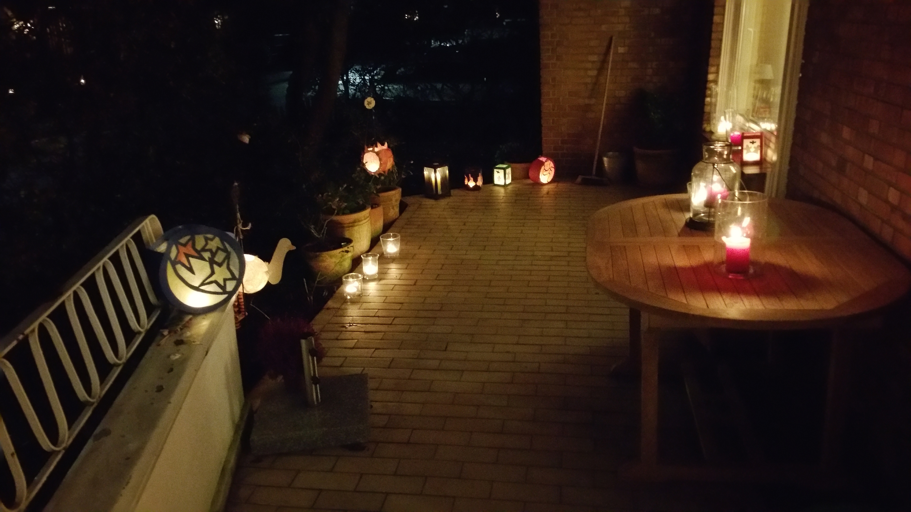
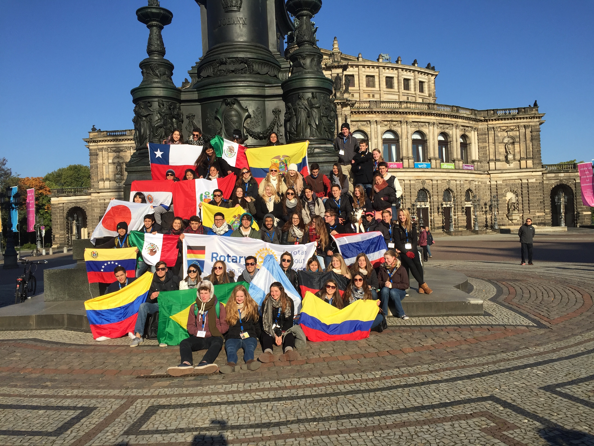
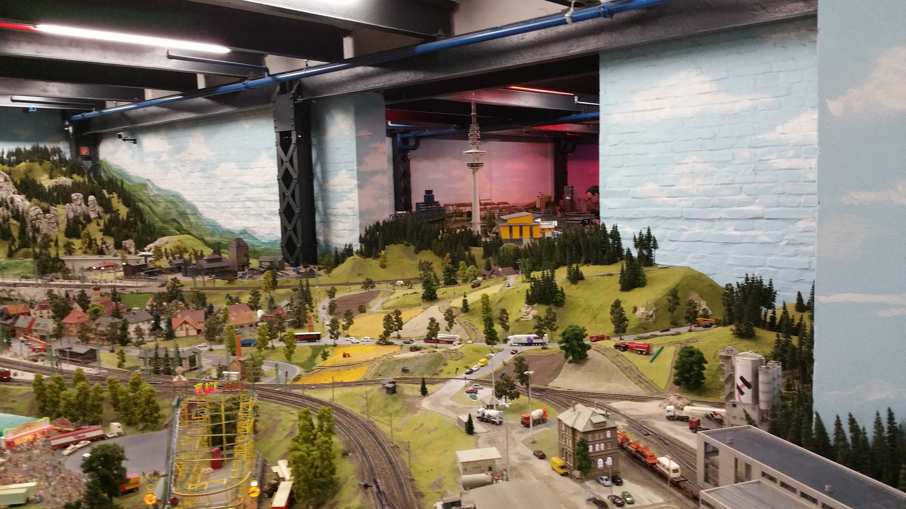
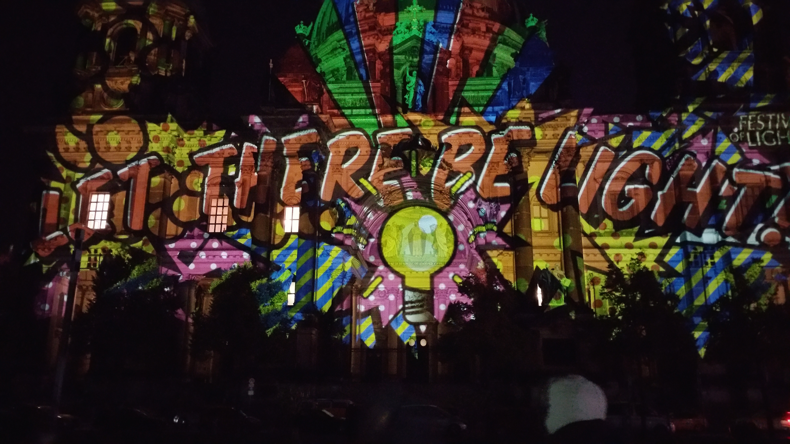
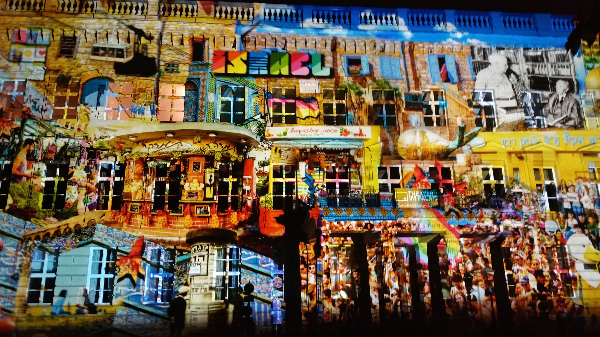
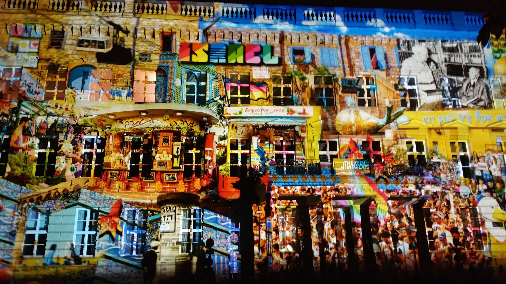

Christmas in Germany
 Jasper Holton | December 28, 2015
Jasper Holton | December 28, 2015
Well, the year of 2015 is almost over. It's been a good year for the most part, and I am still happy with my exchange. Christmas in Germany turned out to be quite an enjoyable experience. School ended on the 22nd, and I was left with a few days to relax before Christmas. Various relatives of my host family came on the 24th, and we did some modifications of sleeping arrangements to accomodate everyone. It was a little packed, but it ended up working out just fine. However, I did catch a cold right on time for Christmas, which was unfortunate, but I tried my best not to let it get in the way. I finished up a large paper star for the lamp over our table, which turned out really nice.
On the day before Christmas, when everyone came, we enjoyed some afternoon tea together before going to church. I dressed in my finest clothing (the suit I brought with me) and drove with my extended host family to the church. It was quite packed, which figures considering the day. I'm usually not one for church going, but it turned out to be quite nice. The service involved a lot of singing and organ music, which I really appreciated. Church music is pretty great in my opinion. The rest of the service involved a few bible stories, but also some kind words welcoming the refugees from Syria. I felt that this was quite a nice thing to add.

After the church service was over and we had greeted various family and friends in the church, we headed back home for more tea. I should mention that in Germany (or at least traditionally) the room with the Christmas tree and presents is blocked off from the rest of the house and hidden. It is opened only on the evening of Christmas eve. It was opened up after our tea, and inside was a beautiful scene of a fully lit Christmas tree, presents, and various other decorations. After spending some time to enjoy the room, we had a delicious dinner. It was really nice to spend some time with my extended host family, who are all wonderful people. It feels really good to be considered part of the family, even though it's not my real family.
After dinner, we went back to the living room to open gifts. Yes, to my surprise, Germans open gifts on the evening of Christmas eve. It was also really enjoyable to open gifts with my host family, and I got some nice things from the "Christkind", or little baby Jesus, who brings the gifts. I now have a few more things to remember Germany by, and also some German books to read.
The next few days turned out to be quite relaxing. There wasn't much to do besides enjoy the time with my host family and recover from my cold. I also spoke with my real family back home in Hawaii, it was really nice to hear from them. I miss my family and friends back home, but this Christmas I got to enjoy a new and different experience, and I think that's great. To everyone reading this, Merry Christmas! Or as we say here in Germany, "Frohe Weinachten!"
Four Months
Jasper Holton | December 11, 2015
Today is the eleventh of December. I arrived here the 11th of August. That means I have now been here for four months. I know I have mentioned this before, but it still seems strange to me. It doesn't feel like four months at all. I'm already a third of the way through my exchange. Or at least, thats what I am planning. I don't have a set return date yet. I can stay here up to an entire year, as in, until next August, but I am not sure that I will be able to due to school next year. Anyway, I have until February to decide when my return flight will be.
Meanwhile, it's getting closer and closer to Christmas, which is quite a big deal here in Germany. There are already quite a few decorations up, and we have picked out a tree which we will have cut and delivered to us when the time comes. I'm a bit excited for it actually, being as any foreign holiday is a really fun experience. There is always something new to see and learn.
Now, one might wonder, what have I been up to the past few weeks? Well, quite a bit. I spent some time putting together some Christmas mail for various relatives and friends back home, and I also put together a package for my family to receive in Hawaii. I collected some things that I thought they might enjoy, like sweets, some Christmas related items, and some other typical german things. I found most of what I included at Weinachtsmärkte, or Christmas Markets, which are pretty common here in Germany around this time of year. They pretty much consist of various stands selling many sorts of goods, most of them Christmas related. There is also a lot of what is called Glühwein, what is essentially a hot drink consisting of wine and various spices. You can buy it almost everywhere you turn at Christmas markets, and many people seem to really enjoy it. Personally it's not to my taste, I find it a bit too sweet. But I had a cup anyway, just to try.
(Above) The Christmas market in Wesel
(Above) Me with a cup of Glühwein in Münster
I was in Münster for a weekend with the rest of the Rotary exchange students in the district. It was really nice to see everyone, and I had a good time visiting the zoo and going to some Christmas markets. I particularly enjoy connecting with other exchange students and hearing about their experiences. Being in this together really connects us as a community. We all have similar experiences, can relate to eachother, and we are all going through the same sort of thing. I also heard that we are getting some new exchange students in this district, from Brazil, Australia, and somewhere else. I should mention that this district receives exchange students on a half year basis, not yearly. That means that we get new exchange students in February and August. This divides the exchange students in our district into what we call "newbies" and "oldies". The oldies are the ones who have been there six months before the newbies (me being one of the newbies). The newbies become oldies after 6 months of being on exchange, at which point their oldies leave, and newbies come to fill their place.
(Above) Some pictures from the Münster Zoo.
I also spent last weekend in Warendorf, where my host mothers sister lives. There we celebrated the German holiday Nikolaus, where families childeren are given small gifts (traditionally left in their shoes). This was quite entertaining for me, as the family actually hired someone to dress as Nikolaus (the costume is somewhat similar to Santa Claus). I'll definatley get some pictures up here later, but I currently have none, being as I didn't take any myself. However, I did get a few nice shots of Warendorf. It's a really nice little town, not far from Münster.
(Above) Some pictures from our walk around Warendorf
Meanwhile I have been in the school where most students are finishing up their exams. This makes school a bit strange for me, as I can spontaneously have my classes cancelled and end up with days where I only have a few hours of school. Otherwise it's been really nice, and my German is continuing to improve at a fast rate. After I have a conversation with someone in German, I stop and think to myself, "Wow, how did I do that?" It's just becoming natural for me at this point. And I am really glad for that, because it was a bit frustrating at first learning the language. I've also been doing some more origami art for Christmas. Here are a few intersecting tetrahedral stars that I made. Not bad I think.

Four months in Germany has been an amazing experience. All new people, all new language, all new school, all new life almost. I miss my family back home a bit more, but I am still really excited for the rest of what this experience has in store for me. Every day is an adventure, and every day is a treasure. I hope that with my blog you will get a glimpse of what this is like. Until next time!
Fall Into Winter
Jasper Holton | November 25, 2015
I figured I really should give you guys an update, being as it has been a while since I have written anything here. I've now been here 106 days if my math is right, which seems pretty crazy being as it doesn't feel like that long. It just feels like a few weeks, but those weeks quickly slip into months and now I'm almost a quarter of the way through my exchange. It may seem simple but it's just weird to think about.
(Above) Me on a walk just outside of Wesel.
(Above) A picture of the Rhein from Wesel
So, what has happened in the last month or so? I'll try to summarize. A large portion of my time has been spent in school and language school, being as I have school from 8-11:20 and then language school from 2-8. This made for some quite stressful days, and with the burden of learning a new language also I found myself to be tired pretty constantly. Overall it was for sure worth it though. My German has improved so much, a lot more than I had expected it to. And it gets better every day. It's really exciting to be learning a new language.
(Above) Some pictures from my school
I also got the chance to visit a cool exhibition in Oberhausen, called "Die Schone Schönheit". This exhibition was in a gigantic gas storage tank that had been converted to a museum for temporary exhibitons. The idea of the collection was to bring together beautiful art from all over the world and organize it. None of the pieces were origionals, but it was still really nice to look at them and read a bit about them.
(Above) A picture from the exhibiton
(Above) These pictures were taken from the top of the museum. The view is pretty nice up there
I skipped out on language school one thursday to participate in a "Hochschuletag", which was a day where everyone from my class (11) went in several busses to Münster in order to see the university. I attended a few lectures about Computer Science, which I found to be interesting even though this university isn't exactly known for it's exceptionalism in this area. Still though, it was nice to see the lectures and spend some time in Münster.

(Above) Some pictures from my day in Münster.
My house here in Wesel is a few houses away from a small Kindergarten. Every year, kindergartens in Germany celebrate St. Martin's day. This holiday is in rememberance of St. Martin of Tours, a roman soldier who gave half of his cloak to a beggar who was cold. For this kind act, he was made a saint. Anyway, to remember this man the childeren walk through the streets while a band plays and carry lanterns. It's kind of a sweet holiday, and it was really pretty will all the lantern light.
(Above) Kindergarteners with their parents celebrating St. Martins day
(Above) Some candles out on our patio
Last weekend I went to Frankfurt (or to be more specific, Heusenstamm) for my host mothers sisters birthday. I guess she would be my host aunt? Anyway, this was quite a nice experience and I got the chance to spend some time with my extended host family, who are all wonderful people. It was however a bit of a stress on my language skills, which was both good and bad. It's easy to get a bit mixed up when learning a new language, as I was reminded when I used the phrase 'ganz gut' instead of 'sehr gut' to describe the food. I had thought that they were the same, both meaning 'very good', but alas, I was mistaken and realized I had told them that the excellent meal was just 'all right'.
(Above) The drive to Franfurt
(Above) Me with my host mother, her sister, and my host brother at a castle in Heusenstamm
(Above) Another picture of this castle
In past few days fall has really started to turn to winter. It has gotten colder for sure, though still not anywhere near as cold as I am used to. The trees are barren having lost their leaves, and frequent rain leads to a constant dampness outside. But yesterday I got to see some snow, which I found really wonderful. Snow is one of the main things I miss about Alaska. It's the kind of thing you kind of take for granted until it's gone. The snow didn't stick though sadly, but maybe we will get some that does this December? I hope so. I've been working on putting together a package with some nice typical german things for my family to enjoy around Christmas. Turns out that sending a package to the USA is somewhat difficult, but I can make it happen. I managed to get some postcards through already.
(Above) Snow in Wesel!
All in all things have been great here. I am enjoying myself, school is going well, and my language skills are coming along faster than I expected. I haven't found myself getting homesick yet, which I am glad of, though the snow yesterday did bring on a pang of nostalgia for my icy home. And I can't say I'm not sad to be missing out on Heimer's classes, especially after hearing my friends back home talk about them. It's okay though, I have enjoyed my time so far in Germany and I know I will enjoy the rest of it. Meanwhile, I'll try to update this a bit more often so it's not always long entries like this one. I'll have an entry before Christmas at the very least. Thanks for reading guys, and stay warm!
(Above) Keeping myself busy with some paper star folding, why not?
Notes on some Site Changes
Jasper Holton | October 18, 2015
I've been messing around with the code of my site/blog as you may have noticed. I've split this personal essay collecton into a series of pages for easier reading. I've also decreased some of the image quality so the site will load faster. If any of you reading this would like one of the images in full definition and unedited (that's 16 megapixels), just send me an email using jasper(at)holton(dot)io. All of my images are in the public domain, meaning you can do whatever you like with them.
Additionally, I added a comments section (hopefully it works well) so feel feel free to leave a comment on what you think. Once again, constructive criticism is welcome.
Being as vacation is over, I'll be headed back to school tomorrow. I'll spend four hours in the school, and then go by train to Dusseldorf where I will spend another four hours in the Language school. It will most likley be exhausting, but I'll learn a lot and improve my German so I think it's worth it.
Lastly, I may have broke a few things when tweaking the site. If something doesn't work for you, once again please contact me so I can fix it. Thanks for reading!
Update: October 19, 2015 - I didn't figure this merits a new entry, but I also added a essay archive so you can easily get to older essays or ones from a specific day. You can find this by clicking the "Archive" button on the meun bar.
Deutschland Tour: Day Fourteen
Jasper Holton | October 16, 2015
We woke up early for our last day of the tour, much to the protest of the very tired partiers of the night before. We were on the road at 8:30, and we drove directly to Münster, only stopping along the way for food. We said our goodbyes to those who lived near Münster, and then continued on to Duisburg where the greater portion of us live. We were sad to part ways after having such a great time together, but it won't be long until we see eachother again.
I rode the train back to Wesel, where I found myself with a 20 minute walk home in the rain. Luckily one of my souveneirs from berlin happend to be an Umbrella, so I managed to deflect most of the weather and got home safe and dry.
Deutschland tour is now over, but what I took from it lives on. I brought back with me many great memories, experiences, friendships, and photographs. And I have essays here as well. While I know my exchange has many more great things in store for me, this tour is certainly something I will not forget.
As it is only now that I have received them, I have placed below all of the group pictures we took through the trip. Thanks to all of you for being an awesome tour group!



Last, but certainly not least, I would like to thank the Dr. Peter Schaap, Wolfgang Breme, and the Rotex group for organizing this tour. Here's most of them in the photo below.
Deutschland Tour: Day Thirteen
Jasper Holton | October 15, 2015
We began our day with a short tour of the city and the harbor.


After this short tour, we walked a short ways to the "Miniatur Wunderland". This is essentially a series of hyperrealistic models of cities in Germany and other parts of the world. It happens to be the largest model railroad in the world. Being a model railroad kind of guy, I really loved this place. Everything moved, from the trains to the cars to the planes. You will notice in the photos below that there was even a day/night cycle, with the lights turning dark for the night. It was really well done.
It is neccesary to expain that the photo above is at Checkpoint Charlie (remember this?) and shows a scene from the unification of Germany, where it was no longer split up and became simply one nation. This historic and wonderful moment is beautifully represented in the scene.


(Above) I should note that this photo is of the control room for all of the trains. These guys work all day just making sure these things don't crash into eachother or break. What a cool job.

(Above) Note how it was "night" when I took this picture of the airport.


(Above) Even this ship moves, though I'm still not quite sure how it was controlled.

(Above) And of course, with a setup this complex, they have to have people to repair things. But all in all, the whole place was pretty much seamless. I never saw any major malfunction, like a stopped train or a broken light.
We spent several hours in the Miniatur Wunderland, before continuing on with our tour of the city.


(Above) Looking majestic in the Rathaus
We then continued to tour the city, and spent some time in the Rathaus. While the city was really nice, the weather was unfortunatley not so nice. Still, it was quite enjoyable.
Deutschland Tour: Day Twelve
Jasper Holton | October 14, 2015
Today we woke up early and began our long drive to our final tour destination, Hamburg. However, we didn't go directly to Hamburg. Instead, we took a break in the middle to explore a little bit of Schwerin. The castle here was really incredible, and we were able to explore the inside and some of the area around it. However, we weren't allowed to take any pictures inside the castle. The pictures I got really don't do it justice, but it was a really nice castle.

After our time in Schwerin, we continued our drive to Hamburg. When we got there, we were given some time to unwind in a large park. We all enjoyed it, but our time was cut short as it began to rain. We met and drove with our bus to the Hauptkirche in Hamburg, where we had some time to walk around this fabulous church and take photos.


After this, we went to our Hostel, had dinner, and settled into our rooms. We then were given some free time to walk around outside of our hostel, and I sat with a group of other exchange students in a nearby park, talking and enjoying the evening. We went back to the hostel at around 11 and went to bed.
Deutschland Tour: Day Eleven
Jasper Holton | October 13, 2015
We continued our tour of Berlin today. We walked around and looked at some of the famous sites, including the Brandenburger Gate and the holocaust memorial. The Brandenburger gate is one of the most famous sites in Germany, and is on the back of the 20 Euro cent coin.


(Above) These two pictures are of me and Indra, a Rotex from Oberhausen who went on exchange to Anchorage, Alaska in 2013-14. Go Alaska!

(Above) Cold exchange students resting
The Holocaust memorial is a series of concrete blocks that are all put together. They symbolize the ashes of the people who were killed during the Holocaust.


After visiting the memorial, we went to the U.S. Checkpoint Charlie (Checkpoint C) which was an important point along the Berlin wall. This was where people could cross between the area of Germany under American control and the area under Soviet control.

We went on to visit more interesting sites in Berlin, including the Berlin Concert hall and the Berlin Dom (Cathedral).


(Above) Indra and I, again represnting Alaska
Then we went back to the hostel and had a bit of free time to relax. We were given 10 euros each for dinner, and we went out and got our food in groups. We then met back at the Hostel and walked to the Brandenburg Gate, which was lit up really nicley. We watched the show for a few minutes, which consisted of music and many interesting animations on the gate. Photos, and a video are below.


We then walked to the Parliment building where we were given a tour and a short lecture about the building and the government. We were given some time to explore in the building, which was really nice. All of the architecture was modern and really beautiful.
(Above) Our group in the Parliment building
(Above) A view of the city from Parliment
After exploring the building, we took a bus back to the Hostel and went to sleep.
Deutschland Tour: Day Ten
Jasper Holton | October 12, 2015
We were given a bit more time to sleep today, which was nice. We woke up, packed, had breakfast and then boarded our bus for the drive to this nation's beautiful and historic capital of Berlin. In Berlin, we drove around and saw some of the major sites in the city via our bus.


One of my favourite parts about this tour was the East Side Gallery, which is a gallery of street art. It has many truly beautiful pieces of art which are famous across the world.


When our tour was over, we went back to the hostel and settled into our rooms. Then we went out to a restaurant for dinner. After finishing dinner, we went to a beautiful light show where massive projectors projected art onto some of the famous buildings in Berlin. Below are some of the best displays.



 

This light show was really incredible. I had never seen anything like it. What a creative idea to light up buildings with massive projectors and turn them into beautiful, dynamic art. After we were done watching this light show, we went back to our hostel and went to bed.
Deutschland Tour: Day Nine
Jasper Holton | October 11, 2015
Today was our second day in Dresden. We had another tour of the city, and once again more free time to explore the city. Today was dreadfully cold for many of the exchange students. It was about 0 Celsius, which for me doesn't seem bad at all, but for many of the exchange students coming from other countries it was much colder than they are used to. Despite the cold, we all had a good time and enjoyed this beautiful city. Naturally, pictures are below.
After our free time, we met and were all picked up by our bus driver. We took a short drive to the Meisen Porcelain factory. This factory was the first making porcelain in all of Europe, and does it incredibly well. Everything they make is handmade and hand painted. And all of it is way beyond anything I can afford. A little teacup? Five hundered euros. A nice little plate? Nine hundered. A little angel statue? Two thousand. Despite this, it was nice to look around and take some pictures. These people really know their stuff when it comes to Porcelain.

After touring the museum and workshop, we visited the gift shop. I was thinking some nice porcelain from a historic place would make a great present, but once again I discovered that the cheapest little bit of porcelain costs 30 euros, which is way beyond my price range. So instead we headed back out into the cold day, now a bit warmer after a good few hours of sunshine. We drove back to our hostel where we had dinner, and then some free time to prepare for the talent show that the tour organizers were putting on for us. I decided to make an attempt to sing "Here's a Health to the Company", which I found to be a very fitting song for our tour group. I even got my audience to join me for the Chorous, which was really wonderful.
After the talent show, which proved to be equal parts hastily prepared and hilarious, we all went to sleep.